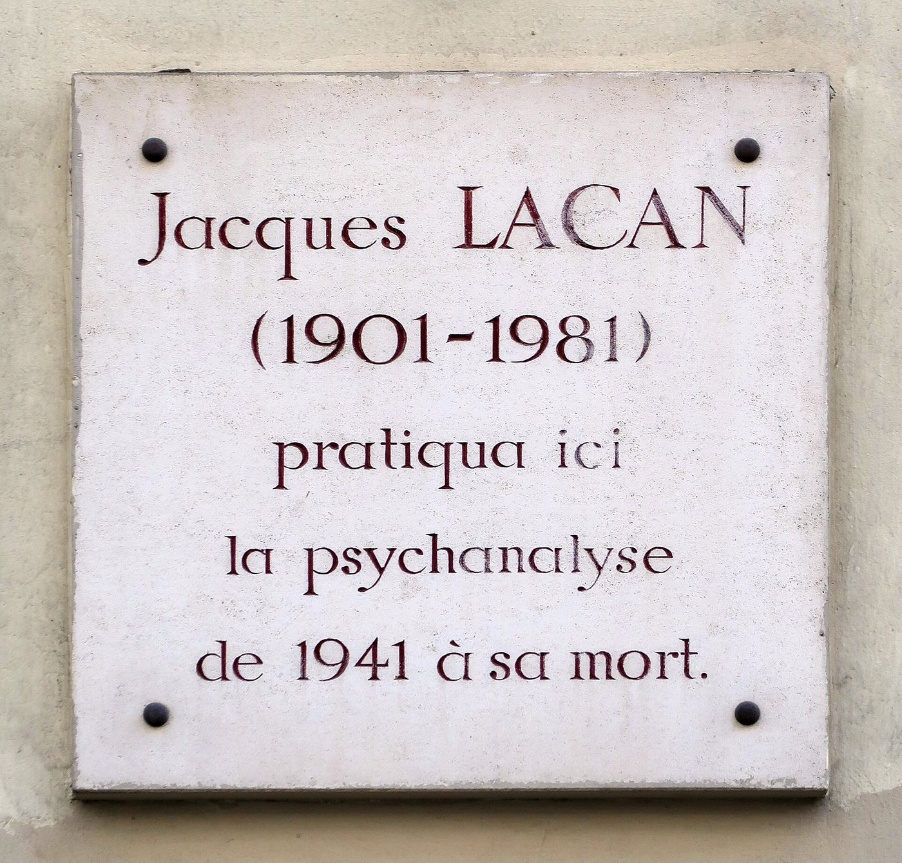

- Dil
- Türkçe · Fransızca · İngilizce
- Saat farkı
- Kışın 2, yazın 1 saat
- İlk görüşme
- Ücretsiz
- Acil
- 112 · 15 · 3114
Lacan’ın şehrinde
Paris’in yedinci bölgesinde, Saint-Germain-des-Prés’ye yakın sakin bir sokakta, 5 rue de Lille numaralı binanın duvarında küçük bir plaket durur: Jacques Lacan burada 1941’den ölümüne kadar psikanaliz pratiği yaptı. Bu sitedeki yazıların ve benim klinik çalışmamın yönelimini belirleyen düşünce, büyük ölçüde bu adresten, Lacan’ın kırk yıl boyunca analizanlarını dinlediği bu muayenehaneden ve yirmi yedi yıl sürdürdüğü seminerlerden doğdu.


Paris psikanalizin tarihinde başka bir anlamda da bir gurbet şehridir. Genç Freud, 1885 sonbaharında Charcot’nun derslerini izlemek için Viyana’dan Paris’e gelmiş, Salpêtrière’de geçirdiği aylar, histeriye ve dolayısıyla psikanalize giden yolun başlangıcı olmuştu. Bulgaristan’dan 1965’te Paris’e gelen Julia Kristeva, yirmi üç yıl sonra yazdığı Étrangers à nous-mêmes’de (Kendimize Yabancılar) yabancılığı, dışarıdan gelenin bir özelliği olmaktan çıkarıp her öznenin kendi içinde taşıdığı bir boyut olarak okudu. Türkiye’den Paris’e gelen sanatçılar ve yazarlar da, Abidin Dino’dan Nedim Gürsel’e, bu şehirde iki dil arasında bir hayat kurdular.
Fransa’da Türkiyeli olmak
1965 anlaşmasından sonra Türkiye’den gelen işçiler başta Alsas ve Lorraine’in sanayi bölgelerine, Paris çevresine ve Lyon’a yerleşti. Strazburg ve Mulhouse, bugün de Türkiye kökenli toplulukların en yoğun olduğu şehirler arasındadır. Fransa’da büyüyen ikinci ve üçüncü kuşak, laik ve tek dilli bir cumhuriyet modeliyle evde konuşulan dil ve taşınan değerler arasındaki gerilimi yakından tanır. Okulda Fransızcanın kusursuzluğu beklenir; evde Türkçenin unutulmaması. İki dil arasında büyüyen biri için hangi dilde “ben” diyebileceği sorusu, Fransa’da da gurbetin en derin sorusudur.
Görüşmeleri tamamen Fransızca yapmak mümkündür. Fransızca eğitim almış, iç dünyasını bu dilde kurmuş biri için bu bir kolaylıktır; Türkçe ile Fransızca arasında gidip gelmek isteyen biri için ise iki dilin arasındaki geçişler, çalışmanın verimli malzemelerinden biri olabilir. Görüşmeler, gerekirse, İngilizce de yapılabilir.
Görüşmelerde sık konuşulan konular
Fransa’da yaşayan analizanların sık getirdiği sorular arasında iki dil ve iki kültür arasında kimlik, aile ve evlilik beklentileri, okulda ve iş hayatında dışlanma deneyimleri, uzaktaki anne babaya dair kaygı ve suçluluk, yalnızlık ve aidiyet sayılabilir. Fransa’da psikanalizle tanışmış, Lacan’ı ya da Freud’u okumuş ve bu çalışmayı kendi ana dilinde ya da Fransızca deneyimlemek isteyenler de vardır.
Pratik bilgiler
Saat farkı. Fransa kışın UTC+1, yazın UTC+2 saatini kullanır. Türkiye yıl boyunca UTC+3’tür; kışın iki, yazın bir saat ileridedir.
Sigorta. Fransa’da Assurance maladie, Mon soutien psy programı kapsamında, Fransa’da sözleşmeli psikologlarla yapılan belirli sayıda görüşmeyi karşılar. Bu görüşmeler programın kapsamında değildir; mutüellerin koşulları ise farklılık gösterir.
Acil durumlarda
Bu görüşmeler bir acil durum hizmeti değildir. Kendinize ya da bir başkasına zarar verme tehlikesi varsa hemen 112’yi ya da tıbbi acil yardım için 15’i (SAMU) arayın. İntihar düşünceleriniz varsa, ulusal intiharı önleme hattı 3114’e günün her saati, ücretsiz ulaşabilirsiniz.
Sık sorulan sorular
Görüşmeleri tamamen Fransızca yapabilir miyiz?
Evet. Görüşmeler Fransızca, Türkçe ya da İngilizce yapılabilir; tek bir dilde kalabilir ya da diller arasında gidip gelebilirsiniz.
Mon soutien psy ya da mutüelim görüşmeleri karşılar mı?
Mon soutien psy yalnızca Fransa’da sözleşmeli psikologlarla yapılan görüşmeleri kapsar. Mutüellerin koşulları farklı olduğu için, bu sizin için önemliyse kendi mutüelinize danışmanızı öneririm.
İlk görüşme ücretsizdir. Bir gün ve saat belirlemek ya da sorularınızı sormak için bana Türkçe ya da Fransızca yazabilirsiniz.
İletişim formu